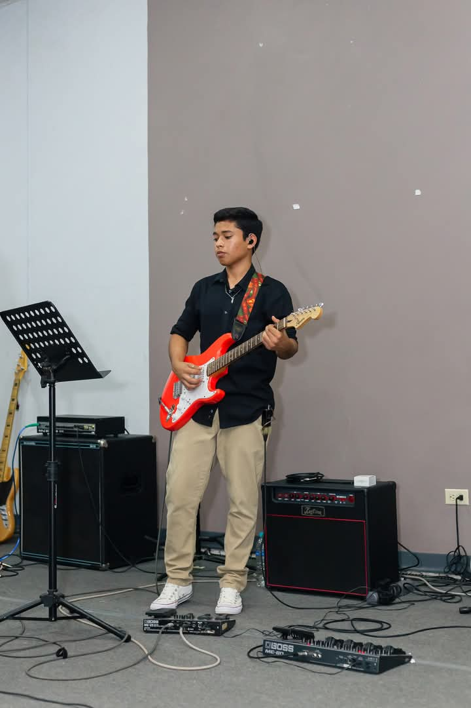

|

ISAAC MEJIA 17 años 12 BTP |
Yo
Nací un martes 14 de marzo del 2008, mis padres, emocionados con mi llegada, decidieron llamarme
Carlos Andrés. Mi primer nombre es en honor a mi tío Carlos, una persona muy importante en la familia,
y el segundo nombre porque simplemente les gustó cómo sonaba junto al primero. |